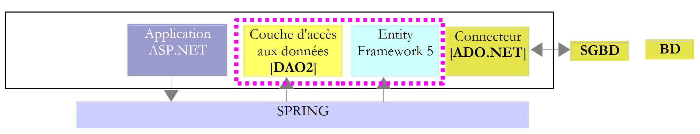

1. Introducción
1.1. Objetivo
El PDF del documento está disponible |AQUÍ|.
Los ejemplos del documento están disponibles |AQUÍ|.
Entity Framework es un ORM (mapeador objeto-relacional) creado inicialmente por Microsoft y ahora disponible en código abierto [juillet 2012, http://entityframework.codeplex.com/]. En un curso ASP.NET utilizo la siguiente arquitectura para una determinada aplicación web:
 |
El marco NHibernate [http://sourceforge.net/projects/nhibernate/] es un ORM que apareció antes que Entity Framework. Se trata de un producto maduro que permite conectarse a diversas bases de datos. El ORM aísla la capa [DAO] (Data Access Objects) del conector ADO.NET. Es el ORM el que envía las órdenes SQL al conector. La capa [DAO] utiliza la interfaz que ofrece el ORM. Esta depende del ORM. Por lo tanto, cambiar el ORM implica cambiar la capa [DAO].
Esta arquitectura resiste bien los cambios en SGBD.
Cuando se conecta la capa [DAO] directamente al conector ADO.NET, cambiar SGBD tiene un impacto en la capa [DAO]:
- los SGBD no tienen todos los mismos tipos de datos;
- los SGBD no tienen las mismas estrategias de generación de claves primarias;
- los SGBD contienen SQL de propiedad exclusiva;
- la capa [DAO] pudo haber utilizado bibliotecas vinculadas a un SGBD concreto;
- ...
Cuando es un ORM el que está vinculado al conector ADO.NET, cambiar de SGBD equivale a cambiar la configuración del ORM para adaptarla al nuevo SGBD. La capa [DAO] no cambia.
El marco Spring.NET [http://www.springframework.net/index.html] garantiza la integración de las capas de una aplicación. Arriba:
- la aplicación ASP.NET solicita a Spring una referencia sobre la capa [DAO];
- Spring utiliza un archivo de configuración para crear esta capa y devolver la referencia.
Esta arquitectura se adapta bien a los cambios en las capas siempre que estas mantengan la misma interfaz. Cambiar la capa [DAO] anterior consiste en modificar el archivo de configuración de Spring para que se instancie la nueva capa en lugar de la antigua. Dado que ambas implementan la misma interfaz y que la capa ASP.NET utiliza esta interfaz, la capa ASP.NET permanece inalterada.
Por lo tanto, nos encontramos ante una arquitectura flexible y evolutiva. Para demostrarlo, vamos a sustituir ORM y NHibernate por Entity Framework 5:
 |
Procederemos en varias etapas:
- descubriremos Entity Framework 5 con varios SGBD;
- construiremos la capa [DAO2];
- conectaremos la aplicación ASP.NET existente a esta nueva capa [DAO].
1.2. Herramientas utilizadas
Las pruebas se han realizado en un portátil HP EliteBook con Windows 7 Pro, un procesador Intel Core i7 y 8 GB de RAM. Utilizaremos C# como lenguaje de desarrollo.
El documento utiliza las siguientes herramientas, todas ellas disponibles de forma gratuita:
Herramientas de desarrollo:
- Visual Studio Express para Desktop 2012 [http://www.microsoft.com/visualstudio/fra/downloads];
- Visual Studio Express para Web 2012 [http://www.microsoft.com/visualstudio/fra/downloads].
SGBD SQL Server Express 2012:
- SGBD: [http://www.microsoft.com/fr-fr/download/details.aspx?id=29062];
- una herramienta de administración: EMS SQL Manager para SQL Server Freeware [http://www.sqlmanager.net/fr/products/mssql/manager/download].
El SGBD Oracle Database Express Edition 11g Release 2:
- el SGBD: [http://www.oracle.com/technetwork/products/express-edition/downloads/index.html];
- una herramienta de administración: EMS SQL Manager for Oracle Freeware [http://www.sqlmanager.net/fr/products/oracle/manager/download];
- un cliente Oracle para .NET: ODAC 11.2 Release 5 (11.2.0.3.20) con Oracle Developer Tools para Visual Studio: [http://www.oracle.com/technetwork/developer-tools/visual-studio/downloads/index.html].
El SGBD MySQL 5.5.28:
- SGBD: [http://dev.mysql.com/downloads/];
- una herramienta de administración: EMS SQL Manager para MySQL Freeware [http://www.sqlmanager.net/fr/products/mysql/manager/download].
El SGBD PostgreSQL 9.2.1:
- el SGBD: [http://www.enterprisedb.com/products-services-training/pgdownload#windows];
- una herramienta de administración: EMS SQL Manager para PostgreSQL Freeware [http://www.sqlmanager.net/fr/products/postgresql/manager/download].
El SGBD Firebird 2.1:
- el SGBD: [http://www.firebirdsql.org/en/firebird-2-1-5/];
- una herramienta de administración: EMS SQL Manager para InterBase/Firebird Freeware [http://www.sqlmanager.net/fr/products/ibfb/manager/download].
LINQPad 4: una herramienta de aprendizaje de LINQ (Language INtegrated Query) [http://www.linqpad.net/, http://www.linqpad.net/GetFile.aspx?LINQPad4.zip].
1.3. Los códigos fuente
Los códigos fuente de los ejemplos que siguen están disponibles |AQUÍ|.
 |
Se trata de proyectos de Visual Studio 2012 [1], reunidos en una solución [2]. En una carpeta [databases], se encontrará una carpeta por cada SGBD utilizado. En ella se encuentran los scripts SQL de generación de la base de datos de ejemplo para estos SGBD.
1.4. El método
Para descubrir Entity Framework 5 Código First, partí en primer lugar del siguiente libro: «Professional ASP.NET MVC 3», de Jon Galloway, Phil Haack, Brad Wilson y Scott Allen, publicado por Wrox. En la aplicación de ejemplo de este libro, los autores utilizan Entity Framework (EF) como ORM. Como no lo conocía, revisé el net para saber más. Así descubrí que la versión más reciente de version era la 5 y quehabía incompatibilidades con EF 4, ya que el código del libro probado con EF 5 presentaba errores de compilación.
Posteriormente descubrí que había varias formas de utilizar EF:
- Model First: hay numerosos artículos sobre este enfoque de EF, por ejemplo, [http://msdn.microsoft.com/en-us/data/ff830362.aspx]. Este artículo se introduce de la siguiente manera:
Resumen: En este artículo analizaremos el nuevo Entity Framework 4 que se incluye con .NET Framework 4 y Visual Studio 2010. Analizaré cómo se puede abordar su uso desde una perspectiva de modelo, partiendo de la premisa de que se puede impulsar el diseño de la base de datos a partir de un modelo y construir tanto la base de datos como la capa de acceso de forma declarativa a partir de este modelo. El modelo contiene la descripción de las entidades y relaciones representadas, lo que proporciona un enfoque potente para trabajar con ADO.NET, creando una separación de responsabilidades mediante una abstracción entre la definición del modelo y su implementación.
Un ORM sirve de puente entre las tablas de bases de datos y las clases.
 |
Arriba,
- a la izquierda de la capa EF5, tenemos objetos, que llamamos entidades;
- a la derecha de la capa EF5, tenemos tablas de bases de datos.
 |
La capa [DAO] trabaja con objetos que son imágenes de las tablas de la base de datos. Estos objetos se agrupan en un contexto de persistencia y se denominan entidades (Entity). Los cambios realizados en las entidades se reflejan, gracias a ORM, en las tablas de la base de datos (inserción, modificación, eliminación). Además, la capa [DAO] dispone de un lenguaje de consulta LINQ to Entity (Language INtegrated Query) que realiza consultas sobre las entidades y no sobre las tablas. El método Model First consiste en construir las entidades con una herramienta gráfica. Se define cada entidad y las relaciones que la vinculan con las demás. Una vez hecho esto, una herramienta permite generar:
- las diferentes clases que reflejan las entidades construidas gráficamente;
- el DDL (Data Definition Language), que permite generar la base de datos.
Los ejemplos que encontré sobre este método utilizaban todos Visual Studio 2010 Professional y un modelo llamado ADO.NET Entity Data Model. Pude probar este modelo con Visual Studio 2010 Professional, pero cuando pasé a Visual Studio Express 2012, que era mi objetivo, me di cuenta de que este modelo ya no estaba disponible. Por lo tanto, descarté este enfoque.
- Base de datos First: el punto de partida de este método es una base de datos existente. A partir de ahí, una herramienta genera automáticamente las entidades de las tablas de la base de datos. Una vez más, los ejemplos encontrados, como por ejemplo [http://msdn.microsoft.com/en-us/data/gg685489.aspx], utilizan Visual Studio 2010 Professional y el modelo ADO.NET Entity Data Model. Así que también descarté este enfoque, que sin embargo era mi favorito. Para saber qué entidades utilizar como imágenes de una base de datos existente, lo más sencillo era empezar con una herramienta que las generara.
- Código First: uno mismo escribe las clases que formarán las entidades. Para ello, es necesario tener unos conocimientos mínimos sobre el funcionamiento de EF. Este es el camino que seguí porque era compatible con Visual Studio Express 2012.
Una vez hecho esto, trabajé de la siguiente manera:
- escribía un código para SQL Server Express 2012, ya que es para este SGBD donde se encuentran la mayoría de los ejemplos;
- una vez depurado este código, lo trasladaba a los demás SGBD (Firebird, Oracle, MySQL, PostgreSQL).
Aquí vamos a proceder de otra manera. Primero describiré todos los códigos para SQL Server y luego describiré su adaptación a los demás SGBD. En esta adaptación, se realizan los siguientes ajustes:
- las bases de datos tienen características propias. En concreto, he utilizado Triggers para generar el contenido de ciertas columnas de forma automática. Cada SGBD tiene su propia forma de gestionar esto;
- las entidades de imagen de las tablas pueden cambiar, pero en ese caso es intencionado. Podría haber elegido entidades adecuadas para todas las bases de datos;
- El controlador ADO.NET del SGBD cambia;
- la cadena de conexión al SGBD cambia.
El procedimiento a seguir es el siguiente:
- asociación de entidades y base de datos. Relleno de la base;
- volcado de la base de datos con consultas LINQ;
- LINQPad, una herramienta de aprendizaje de LINQ;
- adición, eliminación y modificación de entidades;
- gestión de la concurrencia de acceso;
- contexto de persistencia guardado en una transacción;
- modificación de una entidad fuera del contexto de persistencia;
- Carga anticipada y diferida;
- construcción de la capa [DAO];
- construcción de la capa web ASP.NET.
1.5. Público objetivo
El público objetivo son los principiantes.
Este documento no es un curso sobre Entity Framework 5 Código First. Para ello, se puede leer, por ejemplo, «Programming Entity Framework: Código First», de Julie Lerman y Rowan Miller, publicado por O'Reilly. El documento no pretende en absoluto ser exhaustivo, sino que simplemente expone el enfoque que he utilizado para abordar este ORM. Creo que puede ser útil para otras personas que se inicien en EF5. Mi objetivo no va más allá de este marco.
1.6. Artículos relacionados con developpez.com
El libro citado anteriormente servirá de referencia. Además, existen artículos dedicados a Entity Framework en developpez.com. He aquí algunos de ellos:
- «Entity Framework: el enfoque del código First», junio de 2012, por Reward. Este artículo y el presente documento se solapan parcialmente. Sin embargo, va más allá en algunos puntos, en particular en el «mapeo» de herencia de clases <--> tablas;
- «Introducción a Entity Framework», diciembre de 2008, por Paul Musso;
- «Crear un modelo de clases con Entity Framework», abril de 2009, por Jérôme Lambert;
- «Medición del rendimiento de Linq to SQL frente a Sql y Entity Framework», junio de 2011, de Immobilis;
- «Código de Entity Framework First: activar la migración automática», junio de 2012, por Hinault Romaric;
- «Creación de una aplicación CRUD con WebMatrix, Razor y Entity Framework», mayo de 2012, por Hinault Romaric;
- «Entity Framework: descubriendo Code First Migrations», junio de 2012, por Hinault Romaric;
Como se ha indicado anteriormente, el presente documento no es exhaustivo. Se recomienda leer los artículos mencionados para subsanar ciertas lagunas. Es posible que mi investigación haya sido incompleta. Ruego a los autores que haya podido olvidar que me disculpen.